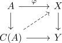
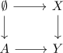

fundamental application of obstruction theory
Proposition
Let $n \geq 1$, $f: X \rightarrow Y$ be a (n+1)-connected map nilpotent map. Let $A$ be a CW-Complex such that
for all $k \geq n + 1$ and all abelian groups $M$.
Then the map
is a Bijection
Proof
reduction to $f$ serre fibration
w.l.o.g. we may factorize $f$ by a weak equivalence and serre fibration (cf. quillen model structure on top)
Then applying general whitehead theorem allows us to replace $f$ with a serre fibration
injective
Let $\varphi: A \rightarrow X$ be a map, such that $f \circ \varphi$ is nullhomotopic. Then choosing a nullhomotopy gives a diagram

where $\varphi$ is nullhomotopic if and only if there exists a lift (cf. map out of cone as nullhomotopy)
using fundamental theorem of obstruction theory for simple maps / fundamental theorem of obstruction theory for nilpotent maps By assumption we have an isomorphism on $\pi_1$ since $n \geq 1$.
Then further obstructions are controlled by elements $H^{k+1}(\Sigma A, \pi_k(\mathrm{hofib})) \cong H^k(A;\pi_k(\mathrm{hofib}))$.
But this group vanishes:
For
- $k \leq n$ this follows from the homotopy group of the homotopy fibre (cf. d-connected map)
- $k \geq n + 1$ this follows from assumption
surjectivity
Let $\varphi': A \rightarrow Y$ be a map.
consider the diagram

by similar reasoning, we may find a lift up to compatible homotopy.